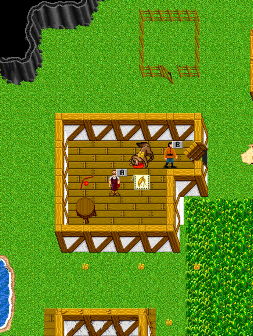

| Naber's Corn |
 |
| Due west of the gates of Carrena lies a little farm. Naber will give you some corn to sell if you are broke. Tell him Naber, work. This works once per 40 hours. Make sure you have no coins on you when you ask him. Corn Sells for up to 35K. |
| Back to Aleria. |